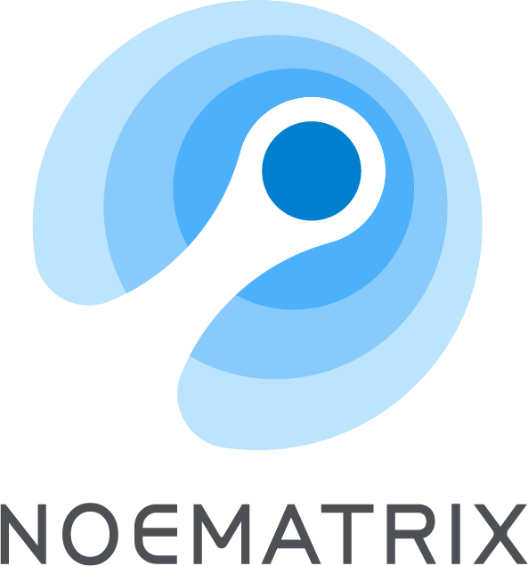

About
I am a PhD student jointly trained by Fudan University and the Shanghai Innovation Institute (SII). I am primarily advised by Prof. Lixin Yang, Prof. Cewu Lu, and Prof. Wenchao Ding.
I am also working closely with Yutao Sun (THU) on unified multimodal architectures and autoregressive video generation. My research interests include Embodied AI & Robot Learning, Humanoid Control, and 3D Perception & Planning.
I'm always looking for related collaborations. If you are interested in chatting with me, feel free to drop me an email.
Research
Education
Experience

Researcher @ Noematrix
Focus on force-aware world–action models and contact-rich manipulation (ForceWAM).
Researcher @ Shanghai AI Laboratory
Worked on real-world robot reinforcement learning and scalable VLA post-training, developing HELP’s 12-robot learning pipeline with autonomous rollout collection, critic-guided trajectory selection, and iterative policy optimization.
Researcher @ Midea AI Research Institute
Worked on real-world robot reinforcement learning with π0 and human-in-the-loop feedback.

ForceWAM: Decoupling Future and Response Learning from Demo and Play Data for Contact-Rich Manipulation
Learning visual and force futures from demonstrations, then translating them into contact-aware actions with experience from task-agnostic play.

CAP: Continuously Adaptive Perception-Blind Humanoid Locomotion via Learned Denoising
Robust humanoid locomotion across changing perception quality, combining learned depth denoising with proprioceptive information.

HELP: Human-Efficient Large-Scale Robot Post-Training with Rollout Segmentation
Human-efficient robot post-training through concurrent fleet supervision and automatic segmentation of useful rollout data.

Resolving State Ambiguity in Robot Manipulation via Adaptive Working Memory Recoding
Adaptive working memory for resolving visually ambiguous states in long-horizon robotic manipulation.

Rhythm: Learning Interactive Whole-Body Control for Dual Humanoids
Learning physically coupled whole-body interactions for two humanoids, from motion retargeting to real-world deployment.

CMoE: Contrastive Mixture of Experts for Motion Control and Terrain Adaptation of Humanoid Robots
Contrastive learning encourages terrain-specific expert specialization for humanoid motion control over diverse terrain.

HGS-Planner: Hierarchical Planning Framework for Active Scene Reconstruction Using 3D Gaussian Splatting
Hierarchical active perception and planning for efficient scene reconstruction with 3D Gaussian Splatting.

Drive in Corridors: Enhancing the Safety of End-to-end Autonomous Driving via Corridor Learning and Planning
Using learned obstacle-free corridors to constrain trajectory optimization and improve end-to-end driving safety.
PS-CC: Planning by Simulation With Continuous Action Space Optimization and Adaptive Cost Learning for Human-Like Autonomous Driving
Continuous-action planning with adaptive cost learning for human-like autonomous driving.
Hybrid Gaussian process regression with temporal feature extraction for partially interpretable remaining useful life interval prediction in Aeroengine prognostics
Temporal feature extraction and hybrid Gaussian process regression for remaining useful life interval prediction.